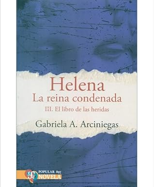

Helena La reina condenada III. El libro de las heridas
Reseña por Jorge I. Zuluaga

Ver reseña en GoodReads (necesita cuenta)
Mi primera impresión al leer el primer libro de la serie fue de profunda admiración por su autora, la escritora colombiana Gabriela Arciniegas, quien pone con esta obra al descubierto su erudición sobre el mundo antiguo, conseguida, como deduzco de la introducción, a través del viaje que realizó personalmente a la mente, al cuerpo y el espíritu inmortal de la gran Helena de Esparta y de los escritos que nos llegaron de aquellos tiempos.
Soy un amante de la novela histórica y debo confesar que, en mi irracional falta de autoestima nacional, nunca esperé que novelas de este género, en especial obras que se desarrollaran en la antigüedad y con esta profundidad y nivel de detalle, pudieran escribirse en mi país.
Pensaba que ninguna autora colombiana y ningún autor coterráneo, sin importar su talento literario, podría soslayar la enorme distancia cultural y temporal que nos separa de los pueblos de la antigüedad euroasiática; no creía que hubiera alguien por aquí que fuera capaz de transportar a sus lectores hasta aquellos tiempos, tal y como lo han hecho, como he podido atestiguar en otras lecturas, autoras y autores más "cercanos" cultural y geográficamente a esos pueblos.
Afortunadamente me equivoqué de cabo a rabo e, insisto, me quito el sombrero delante de Arciniegas y me disculpo por llegar a dudar de que una hazaña así fuera posible. La humanidad de Helena, la de Aristóteles, la de Emilie du Chatelet, la de Confucio es la misma, y no importa el lugar en el que hayas nacido, con el talento académico y literario adecuado, puedes transportarte hasta la mente de esas personas y escribir una gran obra cómo está. Una gran lección para mi.
Como sabrán por la descripción del libro, a lo largo de los tomos que forman la trilogía de "Helena, la reina condenada", Arciniegas teje otra historia posible de lo que pudo ser la vida de Helena de Esparta, o Helena de Troya como acostumbramos llamarla, la princesa Lacedemonia que de acuerdo a los poemas homéricos fue la causante de la guerra de Troya; o bueno, de una de las muchas guerras que posiblemente sacudió a la desaparecida ciudad de Asia Menor, ubicada en el estratégico punto de encuentro entre dos mundos, Asia y Europa. Mucho antes de Bizancio fue Wilusa.
En la Iliada y en los muchos textos inspirados en ella a lo largo de la historia, Helena ocupó casi siempre el papel de un simple objeto de intercambio, de un símbolo más que el de una persona con una historia individual, con voluntad y deseos. Creo que no es muy equivocado asegurar que conocemos mejor la personalidad de otros protagonistas de la Ilíada, por supuesto todos varones, los "héroes" de la historia, Héctor, Aquiles, Príamo o Paris, de lo que sabemos sobre Helena, a pesar de que para todos es claro que esta última estuvo en el centro mismo del conflicto, al menos como lo recogen los poemas homéricos.
Arciniegas se mete, en esta obra, en la piel, en la vida personal de Helena, desde su infancia misma hasta el fatídico final de su vida. En la trilogía asistimos a una versión alternativa del famoso enfrentamiento entre aqueos y troyanos, una versión desde la perspectiva de las mujeres, de las niñas y los niños y de algunos de los hombres que se relacionaron directamente con ellas. En suma, la trilogía de Arciniegas es una historia que recoge a quienes conformaron la mayoría de los implicados en el famoso enfrentamiento.
"Helena, la reina condenada" es también una historia desde la perspectiva de la magia, de los rituales, de la religión, de la comida, de las lenguas, de todas aquellas cosas que también debieron constituir la verdadera "sustancia" de la que estuvo hecho el conflicto. La guerra, las armas, el honor, la sangre, las iracundas divinidades que protagonizan la Iliada, la versión de Homero de esta historia, quedan en un segundo plano en esta versión alternativa y excepcionalmente rica de esta historia milenaria.
Hace unos años tuve el placer de leer por primera vez la Iliada. Como cualquier amante de los clásicos, quede sorprendido por la historia, por la lengua, por la exaltación del honor, por el papel de los dioses, por todas aquellas cosas por las que los poemas homéricos nos siguen sorprendiendo y atrayendo. Sin embargo, hoy, después de terminar de leer la trilogía de Arciniegas mi visión de aquella obra se ha enriquecido muchísimo más. Creo que se complementan perfectamente, que se deberían leer juntas, aunque seguramente para muchos esta pueda parecer una exageración.
Arciniegas me ha permitido por fin empezar a ver a la mayoría de las personas que conforman el drama de este conflicto, y con él el drama de todos los conflictos y las guerras de la antigüedad, de los que la guerra de Troya es apenas el más reconocido modelo. Reconocer a esas protagonistas, en su mayoría fueron mujeres y niñas, entre ellas grandes mujeres, magas, pensadoras y filósofas, quienes soportaron las consecuencias de los proyectos expansionistas o vengativos de autócratas y militares que ostentaban el poder (en su mayoría hombres) es realmente enriquecedor.
Siempre se ha dicho que Helena fue una de las mujeres más bellas de la historia. Que esta fue precisamente la razón por la que se la "pelearon" las dos poderosas ciudades en conflicto, Micenas y Troya. En esto se ha cifrado casi todo el valor del personaje. Pero la Helena de Arciniegas es mucho más que eso. En el primer libro descubrimos una niña y una joven de curiosidad imparable, que cabalga y estudia a la par que sus hermanos varones. Una joven con un espíritu de aventura y una rebeldía que no se corresponde con las mujeres estereotipadas de las grandes historias escritas por y para hombres en la antigüedad. Durante el resto de la novela se va desarrollando delante de nosotros una mujer sabia, conocedora de lenguas diversas y de la magia, viajera incansable, pero también una mujer apasionada, que ama libre e intensamente a varios hombres, rompiendo así también con otros de los estereotipos femeninos muy manidos entre las novelas que se desarrollan en la antigüedad. Sus atributos físicos tampoco son los protagonistas de esta historia, lo que desmarca a la Helena de Arciniegas del rol de trofeo sexual que tiene en los poemas Homéricos y en las innumerables obras que se inspiraron posteriormente en ellos.
Las otras mujeres protagonistas de la trilogía, Atrea, Casandra, Creusa, Andromaca, incluso la contradictoria Hécuba, son seres complejos y también lejanos a los estereotipos con el que las hemos conocido en otros libros. Como ya he dicho, ellas, con la magia, las artes, y su visión particular del mundo que les toco vivir, son las protagonistas indiscutibles de la trilogía; sus historias son las que hilvanan el desarrollo de esta versión de la guerra en la que algunos de los héroes homéricos son apenas satélites.
En suma, leer "Helena, la reina condenada" es como ver un detrás de escena de la Iliada, el lado B de esta historia. Aunque decir "detrás" aquí se antoja a secundario y esto es justamente lo que esta trilogía intenta corregir: las mujeres, los niños y los hombres que no estaban en el campo de batalla no fueron la historia secundaria de estos conflictos, sino más bien el aspecto más humano de los mismos.
Como amante de la historia y la cultura del Antiguo Egipto, me encanto ver el papel central que jugaba todo lo egipcio en la cultura de la época, tal y como lo ha elegido narrar la autora, seguramente no sin sus razones de peso histográficas. La lengua, la medicina, la magia, incluso los hechos políticos y militares que se desarrollaban en el país de las dos Tierras, son protagonistas en toda la trilogía.
Me gusto mucho también ver como Arciniegas usa los nombres de las deidades de los pueblos de la que posteriormente se convertiría en la Helade. Así, en lugar de mencionar a Zeus, Atenea, Demeter, o Perséfone, Arciniegas nos presenta a Diwo, Atana, Wokode, Koré o Potnia, que eran los nombres que recibían aquellas deidades mucho antes que nos llegaran sus historias en los textos de la Grecia Arcaica.
También fue revelador conocer los rituales de la religión mistérica de la que después se convertiría en Grecia, y muchas otras creencias de pueblos diversos que se mencionan en la novela. Todas estas cosas le dan a la obra un hálito de realidad histórica que hace que quienes amamos este género por lo que es, una verdadera máquina del tiempo, apreciemos más el esfuerzo de su autora.
En otros aspectos más "mundanos", me sorprendió mucho lo económicos que son estos textos en la edición en la que los compré del Fondo de Cultura Económica. Apreció mucho que esta editorial haga un esfuerzo para que buena literatura, pero también buena divulgación científica llegue a más personas, pero espero que esto no sea a costa del merecido reocnocimiento económico de su autora. También me sorprendio el pequeño número de personas que, a la fecha en la que escribo esta reseña, los han calificado o reseñado aquí en GoodReads. Espero que el tiempo y muchas más lectoras y lectores le otorguen a esta obra, al menos en la dimensión de objeto de intercambio, de comercio y de reflexión, su verdadero valor como lo que creo que es, una obra significativa del género de la novela histórica.
¡Recomendado sin duda alguna!